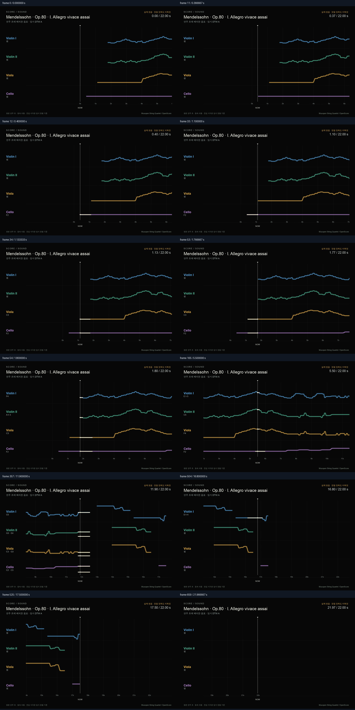
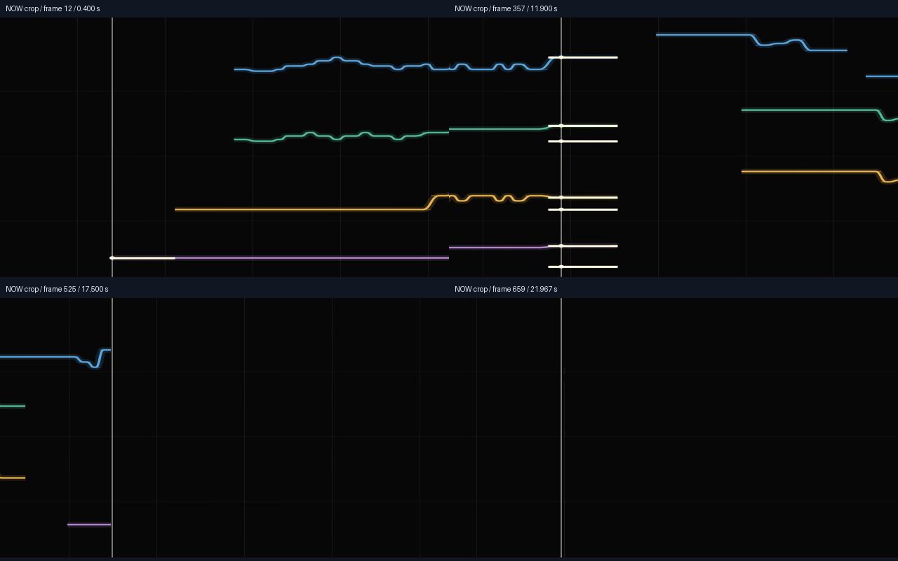

R/R RIBBON ROOM실험 기록 · 이전 결과를 보존한 검토 화면입니다. 새 그래픽 작업은 작업실에서 이어갑니다.
다른 실험 보기
B4.2 · 실제 원음 포함 영상 · 임시 정렬 기준
실제 연주를 따라 흐르는 22초.
멘델스존 Op.80 I악장 · Musopen String Quartet. B4.1의 같은 194개 연주 이벤트·원음을 사용합니다. 리본은 125px/연주초로 흐르며 물리효과는 적용하지 않았습니다.
재생 버튼으로 시작하세요.
대표 시점
앞 무음과 악보 구간 뒤의 실제 녹음 문맥을 포함해 원본 0–22초를 유지합니다. 영상 자체에 원음이 포함되어 별도 음원을 동시에 재생하지 않습니다. 정렬은 기존 DTW A의 임시 결과이며 수동 측정은 보류했습니다.
영상에서 추출한 대표 프레임

재생선 주변 확대

검사와 렌더 방식
1440×900 · 30fps · 660프레임 · H.264/AAC. 각 프레임은 공유 RibbonScene에 f/30초를 넣어 만든 SVG입니다. Chrome 실행이 실패하여 Matplotlib Agg로 SVG를 픽셀로 변환했습니다. 브라우저 캡처가 아니며 글꼴 래스터 방식에는 차이가 있을 수 있습니다.
비디오·오디오 시작 시각 0초, 프레임 시각 격자, 디코딩한 대표 프레임 및 AAC 음원과 원본 WAV의 채널·상관·지연을 검사했습니다. 이는 영상/음원 결합 검사이며 실제 음표 정렬 정확도를 측정한 결과가 아닙니다. 사람의 청취 확인은 대기입니다.
MP4 저장 · 영상·음원 검사 · 660프레임 시간·발음 기록 · 추출 프레임 대조 · 검증 · 출처 · 보고서
녹음·악보 출처는 source_provenance.json 참조. 기존 원본·결과·라이브러리는 보존합니다.